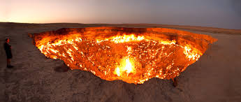
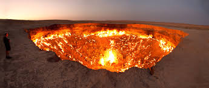
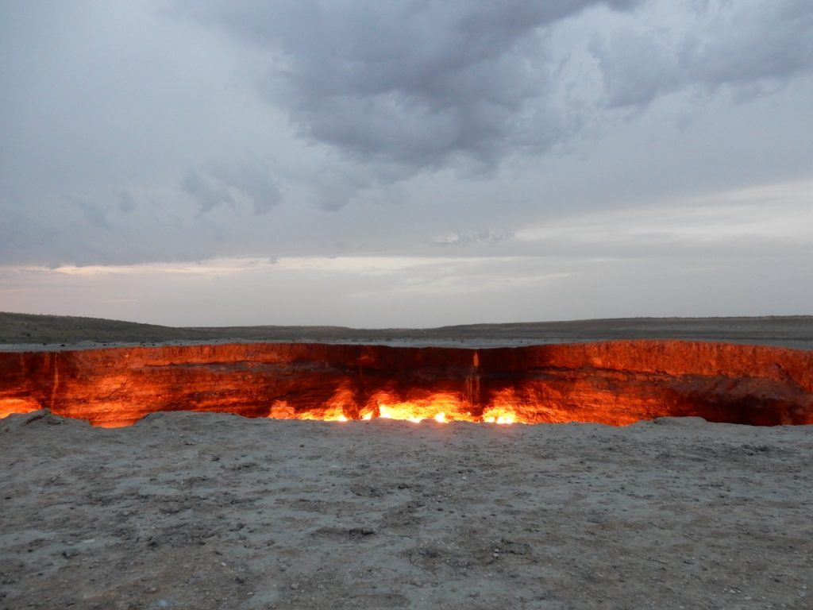
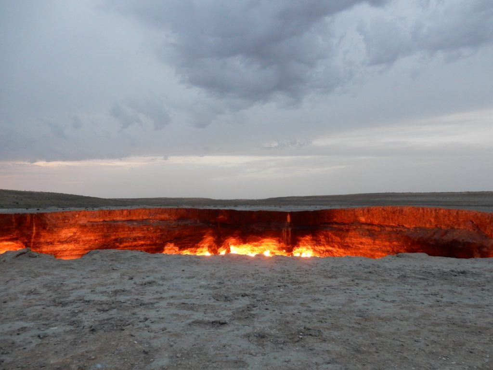

Darvasa Gas Crater
Deep in the heart of Turkmenistan’s Karakum Desert lies one of the world’s most enigmatic and awe-inspiring sights—the Darvaza Gas Crater, famously known as the “Door to Hell.” This fiery pit, spanning over 70 meters in diameter and 30 meters deep, has been ablaze for more than half a century, casting an eerie glow across the barren landscape.
As night falls over the vast dunes of the Karakum, the crater becomes a hypnotic spectacle—its flames flickering and roaring like a portal to another world. The intense heat radiates outward, and the scent of burning gas lingers in the dry desert air, adding to the otherworldly atmosphere. Standing at the crater’s edge, one can’t help but marvel at the sheer power of nature and the unintended consequences of human intervention.
For the intrepid traveler, reaching the Door to Hell is an adventure in itself. A rugged off-road journey through the remote desert leads to this fiery abyss, with the surrounding wilderness offering a rare glimpse into the untouched beauty of Central Asia.
Camping under the starlit sky, with the glow of the crater reflecting in the distance, is an unforgettable experience—one that captures the raw essence of exploration and the mysteries hidden beneath the Earth’s surface.
If you want to travel to this splendid place, travel with us , Wondertrips, if you want more information continue viewing the page. Are you ready for the adventure?
Now that you read all the information above, take a sight on the extras button so you'll be convinsed to travel with WonderTrips.
Images
 

 

 Academic Purpose
Academic Purpose